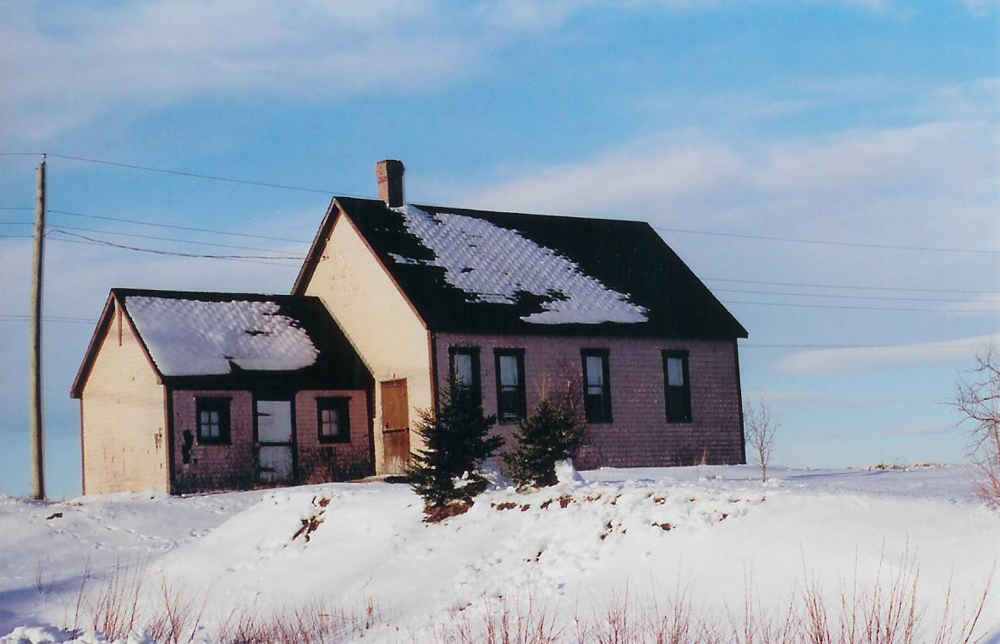

Cameron School

Cameron School courtesy of Elby and Shirley Donnelly
About 1845, the district was divided with one school being build at Middle Black River and another at Bayside (now Miramichi). The school at Middle Black River, the Cameron School, was so named because of all of the Camerons found in the community.
In 1939, the Cameron School became one of seven schools in the newly-created Miramichi Rural High School district in 1939. When the MRHS opened, grades one to six continued at the local school; the new high school offered instruction in Grades seven through eleven.